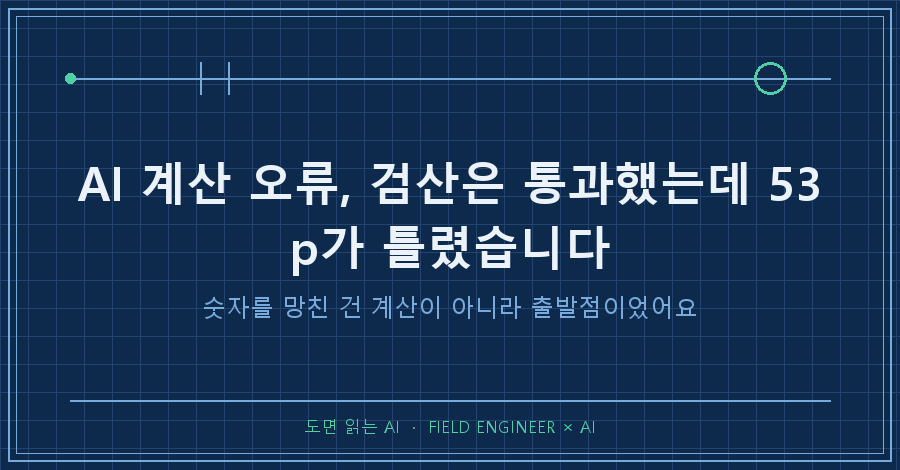
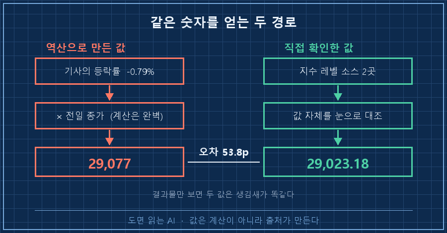
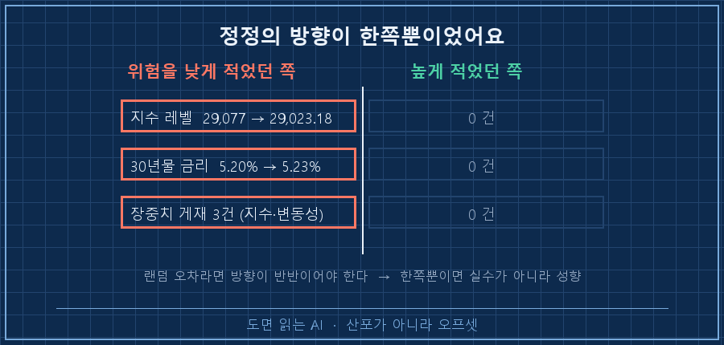
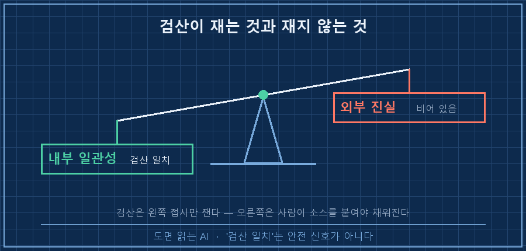

어제 새벽 리포트에 "확정"이라고 적힌 숫자가 하나 있었어요. 뒤에 괄호까지 붙어 있었습니다. (산술검산 일치)
오늘 새벽, 같은 리포트가 그 숫자를 스스로 정정했습니다. 53.8만큼요.
먼저 결론부터 적을게요.
AI 계산 오류는 대개 계산에서 안 나옵니다. 맞는 계산을 틀린 출발점에 대고 해서 생겨요. 그래서 "검산 통과"는 안전 신호가 아닙니다. 검산이 재는 건 내부 일관성뿐이고, 그 값이 바깥 세상과 맞는지는 아무도 안 본 상태일 수 있거든요.
제조 설비 쪽에서 열다섯 해를 일했습니다. 그 바닥에서 제일 자주 듣는 말이 "그거 어디서 읽은 값이냐"예요. 계기에 뜬 숫자를 그대로 쓰는 게 아니라 기준기에 한 번 맞춰보고 쓰는 습관이요.
그 습관을 제 개인 리포트에는 안 걸어두고 있었습니다..
2026년 8월 기준이고, 매일 새벽에 AI가 웹을 뒤져 리포트 한 장을 만들어두는 개인 자동화 얘기예요. 도구가 뭐든 AI가 찾아온 숫자를 문서에 옮겨 적는 상황이면 그대로 적용됩니다.
1. "확정"이라고 적힌 줄이 하루 만에 정정됐어요
로그 두 줄을 나란히 놓아볼게요. 딱 하루 차이입니다.
[08-26] 어제 '확인불가'였던 지수 → 29,077(-0.79%) 확정 (산술검산 일치)
[08-27] 실제는 29,023.18(-0.97%). 오차 53.8p문제는 아랫줄이 아니라 윗줄 끝의 괄호예요. 산술검산 일치.
저 다섯 글자를 보고 저는 그 값을 다 확인된 값으로 읽었습니다. 실제로 그날 리포트에서 그 숫자는 '확인불가' 칸에서 '확정' 칸으로 올라갔고요.
그런데 검산이 실제로 한 일은 이거였어요. 전날 종가에 등락률을 곱해서 나온 값이, 곱셈으로 다시 되짚었을 때 같은 값이 나오는지 보는 것. 당연히 맞죠. 자기가 만든 값을 자기 방식으로 되짚었으니까요..
2. 레벨을 안 보고 등락률로 역산했던 게 원인이었습니다
오늘 리포트가 원인을 이렇게 적어놨더라고요. 원문 그대로 옮깁니다.
지수 레벨을 직접 보지 않고 기사의 등락률로 역산했기 때문이며,
계산은 완벽했으나 출발점이 틀렸습니다.등락률은 -0.79%로 받아왔는데 실제로는 -0.97%였어요. 0.18%p 차이입니다.
이 정도면 별것 아닌 것 같지만, 29,000에 곱해지면 53.8p가 됩니다. 출발점의 소수점 두 자리가 결과의 두 자리를 통째로 밀어버린 거예요.
역산이 위험한 건 값을 만들어내기만 하고 확인은 안 하기 때문입니다. 그런데 결과물만 보면 직접 본 값이랑 생김새가 똑같아요. 소수점 둘째 자리까지 붙어 있으니 오히려 더 정확해 보이고요.
제가 겪은 AI 계산 오류는 거의 다 이 모양이었습니다. 틀린 티가 나는 값은 애초에 걸러지고, 남는 건 그럴듯하게 생긴 값이거든요.

현장에서도 똑같은 사고가 납니다. 유량계가 고장 나서 밸브 개도로 유량을 환산해 적어두면, 그 표는 며칠 뒤 누가 봐도 그냥 계측값처럼 보이거든요. 환산했다는 사실이 표에 안 남으면 그때부터 그건 측정값이 됩니다.
3. 진짜 무서웠던 건 정정이 한쪽으로만 쏠렸다는 거예요
같은 날 정정 보고에 이런 줄이 있었습니다.
8/24 소급 정정 2건
- 지수 29,077 → 29,023.18
- 30년물 금리 5.20% → 5.23% (연준 H.15 공식치)
둘 다 '위험을 온순하게 적은' 방향, 8월 들어 4번째전날 정정 열 건 중 세 건도 위험을 낮게 적은 쪽이었어요.
오차가 진짜 랜덤이면 방향이 반반쯤 나와야 정상입니다. 한쪽으로만 쏠린다는 건 실수가 아니라 성향이라는 뜻이에요. 계측으로 치면 산포가 아니라 오프셋이고요. 오프셋은 평균을 더 내도 안 없어집니다.
왜 그런 방향이 나오는지도 대충 짐작이 갑니다. 확인이 안 된 자리를 메울 때 쓰는 재료가 대개 기사 요약인데, 요약은 원래 순한 쪽으로 반올림되거든요.
여러분이 AI한테 받아 쓰신 수치들도 혹시 한 방향으로만 얌전한 편은 아니던가요?

4. 그래서 규약에 두 줄을 넣었습니다
오늘 리포트가 스스로 적은 개정 문구가 이거예요. 저는 이 두 줄을 그대로 규약에 옮겼습니다.
1. 산술검산은 내부 일관성만 증명할 뿐 외부 진실을 증명하지 않는다.
2. 레벨(절대값)은 반드시 레벨 소스 2곳에서 직접 확인한다.그리고 값마다 어떻게 얻었는지를 문서에 남기게 했어요. 값 옆에 한 단어만 붙이면 됩니다.
| 어떻게 얻은 값인가 | 붙이는 표시 | 게재 |
|---|---|---|
| 값 자체를 두 곳에서 직접 확인 | 확정 | 그대로 씀 |
| 다른 값에서 계산해 만든 값 | 역산 | 쓰되 '역산'을 반드시 붙임 |
| 못 찾은 값 | 확인불가 | 칸을 비워 둠 |
가운데 줄이 이번에 없던 칸이에요. 예전에는 확정 아니면 확인불가, 두 칸뿐이었습니다. 그러니 역산으로 만든 값이 갈 곳이 위쪽밖에 없었던 거죠.
전에 검산 장치 세 개를 걸어뒀다고 쓴 적이 있는데, 이번에 뚫린 자리가 바로 그 장치 안쪽이었어요. 장치가 없어서가 아니라 장치가 볼 수 없는 값이 있어서 뚫린 겁니다.

참고로 오늘 리포트는 04시 00분에 시작해 04시 16분에 종료 코드 0으로 끝났습니다. 기계는 아무 문제 없이 잘 돌았어요. 잘 도는 것과 맞는 값을 싣는 건 완전히 다른 문제더라고요!
AI 계산 오류를 종료 코드로 잡을 수 없는 이유가 여기 있습니다. 오류는 실행이 아니라 값 안쪽에 있으니까요.
이런 게 궁금하실 것 같아서
Q. 그럼 역산을 쓰지 말라는 건가요?
아니요, 계속 씁니다. 역산은 교차 확인용으로는 제일 싸고 좋은 장치예요. 직접 본 값이 두 개 있을 때 그 둘이 맞는지 보는 데는 최고고요. 문제는 역할이 바뀔 때 생깁니다. 확인 수단이던 역산이 게재할 값으로 승격되는 순간이 사고 지점이에요. 그래서 없애는 대신 '역산'이라는 칸을 하나 만들어 준 겁니다.
Q. AI가 '확정'이라고 쓰면 그냥 믿으면 안 되나요?
확정을 상태가 아니라 절차 이름으로 쓰게 하면 좀 낫습니다. "무엇을 보고 확정했는지 한 줄로 같이 적어라"를 붙여두면, 적을 게 없는 자리가 스스로 드러나거든요. 이번에도 원인 문장을 AI가 먼저 적었어요. 저는 그 문장을 규약으로 옮겼을 뿐이고요.
한 줄로 줄이면 이렇습니다. 검산은 값이 스스로와 맞는지만 보고, 세상과 맞는지는 안 봅니다.
다음 편에서는 이렇게 정정된 값이 예전 문서에 그대로 남아 있는 문제, 그러니까 이미 돌려본 자료를 어디까지 소급해 고칠지를 이야기해보려 합니다.
숫자를 어디서 받아왔는지까지 적어두는 규약은 makefield.ai에 정리해두고 있습니다.
태그: #AI계산오류 #AI숫자출처확인 #AI역산검증 #AI가알려준수치 #AI팩트체크 #AI할루시네이션 #AI데이터오류 #교차검증 #AI리포트검증 #자동화검산 #무인자동화 #AI에이전트 #개인AI에이전트 #AI에게일시키기 #도면읽는AI